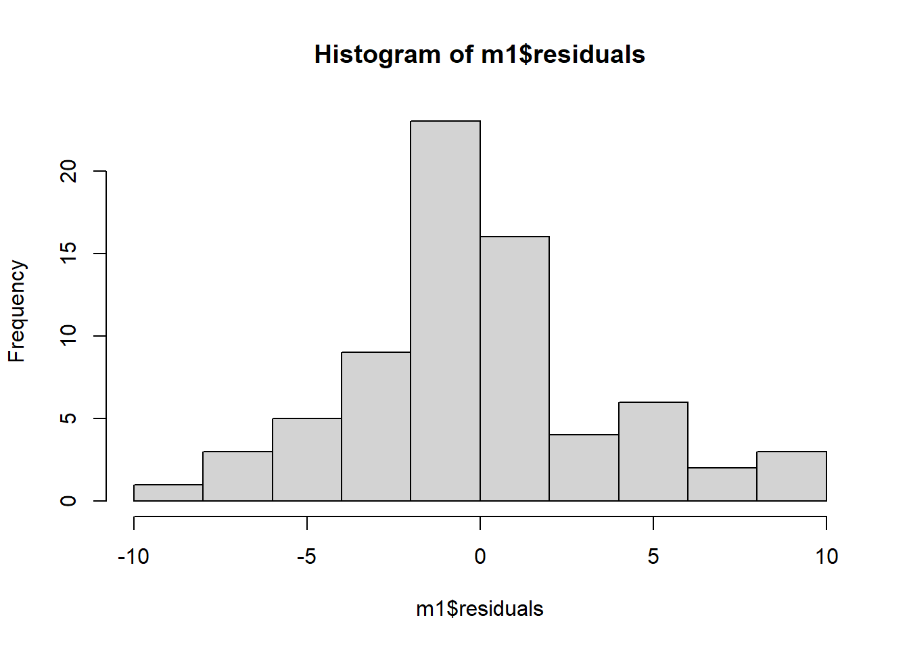
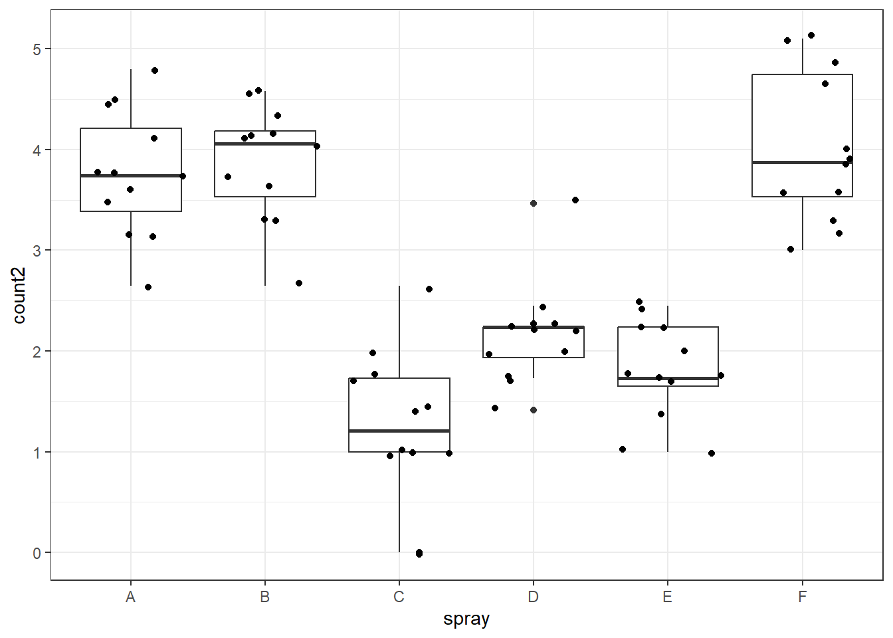

library(tidyverse)
library(gsheet)
library(readxl)
library(report)
library(emmeans)
library(multcomp)
library(multcompView)
library(DHARMa)
library(performance)
library(agricolae)
library(car)
#library(MASS)Aula_06
AULA 06 - 17/04/2024
Estatística Descritiva e Estatística Inferencial
Pacotes
Estatística Descritiva
A estatística descritiva pode ser resumida na qual organiza a coleta, a apuração e a descrição dos dados para amostras, sem almejar conclusões categóricas para as populações nas quais essas amostras se originaram.
Carregando o pacote de dados
Pacote de dados disponíveis em planilha no google drive.
mg <- gsheet2tbl("https://docs.google.com/spreadsheets/d/1bq2N19DcZdtax2fQW9OHSGMR0X2__Z9T/edit#gid=983033137")
theme_set(theme_bw())
mg# A tibble: 20 × 3
trat rep comp
<chr> <dbl> <dbl>
1 Mg2 1 9
2 Mg2 2 12.5
3 Mg2 3 10
4 Mg2 4 8
5 Mg2 5 13.2
6 Mg2 6 11
7 Mg2 7 10.8
8 Mg2 8 9.5
9 Mg2 9 10.8
10 Mg2 10 10.4
11 control 1 13.7
12 control 2 15.9
13 control 3 15.7
14 control 4 14.2
15 control 5 15.9
16 control 6 16.5
17 control 7 18
18 control 8 14.4
19 control 9 16.4
20 control 10 16 Tratamentos independentes
Um pesquisador conduziu um experimento com o objetivo de avaliar o efeito de um micronutriente, o magnésio (Mg), adicionado na solução do solo cultivado com plantas de arroz, no manejo de uma doença fúngica. O experimento foi conduzido em delineamento inteiramente casualizado com 10 repetições, sendo cada repetição um vaso de planta. Um dos tratamentos é o chamado controle, ou testemunha, sem o suplemento mineral. O segundo é aquele com o suplemento do Mg na dose de 2 mM. Em cada uma das repetições foi obtido um valor médio do comprimento de lesões em um determinado tempo após a inoculação.
Os gráficos a seguir mostram que o incremento de magnésio reduz a severidade da doença, ou seja, induz a resistência. Visualmente indica que existe um efeito. Mas, uma hipótese científica deve ser testada.
Hipótese: o incremento de magnésio aumenta a resistência a doença;
Hipótese estatística: não existem diferenças entre os tratamentos.
Usa-se o teste “T” para número de amostras igual ou inferior a 30. Usa-se o teste “T” para grupos independentes.
Premissas: Teste de normalidade e variâncias homogêneas.
Podemos assumir estas premissas através de uma análise exploratória, através da simetria do boxplot. Assume-se visualmente que as variâncias são iguais e que existe uma normalidade, mas, isso pode ser testado. Devemos primeiramente verificar as premissas.
Se a distribuição não for normal, devemos realizar o teste não paramétrico, como o shapiro-wilk.
mg |>
ggplot(aes(trat, comp))+
geom_boxplot()Teste estatístico
Teste “T” student
O teste t compara duas médias e mostra se as diferenças entre essas médias são significativas. A necessidade de determinar se duas médias de amostras são diferentes entre si é uma situação extremamente frequente em pesquisas científicas. Como todo teste estatístico, o teste t também tem como produto a medida do p valor. Ou seja, calculamos a probabilidade da diferença encontrada (entre as médias) terem sido por acaso.
É ideal que tenhamos os vetores separados em duas colunas, em formato largo. Para realizar essa conversão, faremos o seguite comando, atribuindo ao mg2.
Precisamos de uma coluna para cada tratamento.
?t.test
mg2 <- mg |>
pivot_wider(names_from = trat,
values_from = comp)
mg2# A tibble: 10 × 3
rep Mg2 control
<dbl> <dbl> <dbl>
1 1 9 13.7
2 2 12.5 15.9
3 3 10 15.7
4 4 8 14.2
5 5 13.2 15.9
6 6 11 16.5
7 7 10.8 18
8 8 9.5 14.4
9 9 10.8 16.4
10 10 10.4 16 Realizando o teste T-student
A primeira média (X) é referente ao tratamento mg2, que foi incluído primeiro na fórmula.
Encontrou-se uma diferença, mesmo em uma probabilidade muito pequena.
Até agora, assume-se que o teste T é confiável, existe uma diferença estatística.
teste1 <- t.test(mg2$Mg2, mg2$control)
teste1
Welch Two Sample t-test
data: mg2$Mg2 and mg2$control
t = -8.1549, df = 17.354, p-value = 2.423e-07
alternative hypothesis: true difference in means is not equal to 0
95 percent confidence interval:
-6.490393 -3.825607
sample estimates:
mean of x mean of y
10.520 15.678 Vamos obter estatísticas que descrevem o conjunto, seja a tendência central ou a dispersão dos dados. No caso, será a média, variância, desvio padrão, erro padrão e intervalo de confiança - esse último para inferência visual.
dat2 <- mg |>
group_by(trat) |>
summarise(mean_comp = mean(comp),
sd_comp = sd(comp),
var_comp = var(comp),
n = n(),
se_comp = sd_comp / sqrt(n - 1),
ci = se_comp * qt(0.025, df = 9))
dat2# A tibble: 2 × 7
trat mean_comp sd_comp var_comp n se_comp ci
<chr> <dbl> <dbl> <dbl> <int> <dbl> <dbl>
1 Mg2 10.5 1.54 2.39 10 0.515 -1.16
2 control 15.7 1.27 1.61 10 0.424 -0.958Já podemos visualizar os dados com as estatísticas calculadas. Abaixo, as barras verticais representam o intervalo de confiança 95%.
Teste de normalidade
Shapiro wilk
O Teste de Shapiro-Wilk tem como objetivo avaliar se uma distribuição é semelhante a uma distribuição normal. A distribuição normal também pode ser chamada de gaussiana e sua forma assemelha-se a de um sino. Esse tipo de distribuição é muito importante, por ser frequentemente usada para modelar fenômenos naturais.
Se o valor foi acima de 0,05, aceito que a distribuição é normal. Menor que 0,05 rejeita-se a hipótese nula, de que a distribuição não é normal.
Neste caso, assume-se que a distribuição é normal.
shapiro.test(mg2$control)
Shapiro-Wilk normality test
data: mg2$control
W = 0.93886, p-value = 0.5404Histograma para observação de normalidade.
hist(mg2$control)
hist(mg2$Mg2)
shapiro.test(mg2$Mg2)
Shapiro-Wilk normality test
data: mg2$Mg2
W = 0.97269, p-value = 0.9146Para comparar variâncias.
Posso assumir como variáveis homogêneas, valor de P mostrou-se alto. Podemos continuar normalmente com o teste T.
Verificaram-se as premissas de normalidade e de variância.
var.test(mg2$control, mg2$Mg2)
F test to compare two variances
data: mg2$control and mg2$Mg2
F = 0.67654, num df = 9, denom df = 9, p-value = 0.5698
alternative hypothesis: true ratio of variances is not equal to 1
95 percent confidence interval:
0.1680428 2.7237436
sample estimates:
ratio of variances
0.6765394 Assumindo a variância como verdadeira, informando-a como homogênea.
var.test(mg2$control, mg2$Mg2,
var.equal = TRUE)
F test to compare two variances
data: mg2$control and mg2$Mg2
F = 0.67654, num df = 9, denom df = 9, p-value = 0.5698
alternative hypothesis: true ratio of variances is not equal to 1
95 percent confidence interval:
0.1680428 2.7237436
sample estimates:
ratio of variances
0.6765394 Quanto mais próximos os pontos estão da linha, indicam maior normalidade das variâncias. Isso quer dizer que as resultados dentro de cada grupo foram semelhantes.
qqnorm(mg2$control)
qqline(mg2$control)
Report
Monta um texto base que pode ser usado no artigo.
“Effect sizes were labelled following Cohen’s (1988) recommendations. The Welch Two Sample t-test testing the difference between mg2$Mg2 and mg2$control (mean of x = 10.52, mean of y = 15.68) suggests that the effect is negative, statistically significant, and large (difference = -5.16, 95% CI [-6.49, -3.83], t(17.35) = -8.15, p < .001.”
report(teste1)Effect sizes were labelled following Cohen's (1988) recommendations.
The Welch Two Sample t-test testing the difference between mg2$Mg2 and
mg2$control (mean of x = 10.52, mean of y = 15.68) suggests that the effect is
negative, statistically significant, and large (difference = -5.16, 95% CI
[-6.49, -3.83], t(17.35) = -8.15, p < .001; Cohen's d = -3.65, 95% CI [-5.12,
-2.14])wilcox.test(mg2$control, mg2$Mg2,
paired = FALSE)
Wilcoxon rank sum test with continuity correction
data: mg2$control and mg2$Mg2
W = 100, p-value = 0.0001817
alternative hypothesis: true location shift is not equal to 0Dois grupos dependentes
Ocorre uma dependência do avaliador, pois ocorre a avaliação com e sem a escala diagramática, ou seja, existe dependência.
Como são dois grupos, usa-se o teste T, mas devemos indicar a dependência. Uso de um teste pareado, diferente do exemplo anterior.
escala <- gsheet2tbl("https://docs.google.com/spreadsheets/d/1aID5Dh6PlBVCKzU1j7k-WA6zuWQWE2NhtWEgdJtt5iA/edit#gid=1139290215")
escala# A tibble: 20 × 7
assessment rater acuracia precisao vies_geral vies_sistematico vies_constante
<chr> <chr> <dbl> <dbl> <dbl> <dbl> <dbl>
1 Unaided A 0.81 0.83 0.98 1.19 0.11
2 Unaided B 0.72 0.73 0.99 0.92 -0.11
3 Unaided C 0.56 0.71 0.78 1.16 0.73
4 Unaided D 0.82 0.82 1 0.95 -0.01
5 Unaided E 0.75 0.75 0.99 1.1 0.07
6 Unaided F 0.69 0.75 0.92 0.8 0.34
7 Unaided G 0.81 0.82 0.98 1.16 0.13
8 Unaided H 0.78 0.87 0.9 1.07 -0.47
9 Unaided I 0.78 0.79 0.99 1.14 0.09
10 Unaided J 0.62 0.83 0.74 0.65 -0.72
11 Aided1 A 0.91 0.95 0.96 0.89 -0.28
12 Aided1 B 0.91 0.96 0.95 0.89 -0.3
13 Aided1 C 0.91 0.96 0.95 1.28 0.21
14 Aided1 D 0.96 0.97 0.99 1.14 0.09
15 Aided1 E 0.96 0.96 1 1 -0.1
16 Aided1 F 0.9 0.97 0.93 0.86 -0.36
17 Aided1 G 0.85 0.95 0.89 0.83 -0.45
18 Aided1 H 0.88 0.97 0.9 1.29 0.38
19 Aided1 I 0.95 0.96 0.99 1.14 0.07
20 Aided1 J 0.94 0.96 0.99 0.91 -0.13Mostrando a acurácia com e sem o auxílio da escala avaliadora.
escala |>
ggplot(aes(assessment, acuracia))+
geom_boxplot()Teste T para a acurácia.
Primeiro passar do formato longo para o formato largo, selecionando na escala 2 apenas os valores de interesse.
escala2 <- escala |>
dplyr::select(assessment, rater,acuracia) |>
pivot_wider(names_from = assessment,
values_from = acuracia)
escala2# A tibble: 10 × 3
rater Unaided Aided1
<chr> <dbl> <dbl>
1 A 0.81 0.91
2 B 0.72 0.91
3 C 0.56 0.91
4 D 0.82 0.96
5 E 0.75 0.96
6 F 0.69 0.9
7 G 0.81 0.85
8 H 0.78 0.88
9 I 0.78 0.95
10 J 0.62 0.94Teste shapiro wilk
shapiro.test(escala2$Unaided)
Shapiro-Wilk normality test
data: escala2$Unaided
W = 0.87881, p-value = 0.1265shapiro.test(escala2$Aided1)
Shapiro-Wilk normality test
data: escala2$Aided1
W = 0.92852, p-value = 0.4335Teste de variância.
Rejeita-se H0 por p valor ser menor que 0,05.
var.test(escala2$Unaided, escala2$Aided1)
F test to compare two variances
data: escala2$Unaided and escala2$Aided1
F = 5.9294, num df = 9, denom df = 9, p-value = 0.0141
alternative hypothesis: true ratio of variances is not equal to 1
95 percent confidence interval:
1.472772 23.871614
sample estimates:
ratio of variances
5.929371 O teste pareado dá a diferença entre os dados diferentes. O teste T foi usado porque a distribuição é normal.
t.test(escala2$Aided1, escala2$Unaided,
paired = TRUE,
var.equal = FALSE)
Paired t-test
data: escala2$Aided1 and escala2$Unaided
t = 5.9755, df = 9, p-value = 0.0002087
alternative hypothesis: true mean difference is not equal to 0
95 percent confidence interval:
0.1137215 0.2522785
sample estimates:
mean difference
0.183 Teste não paramétrico
Valores da tabela foram alterados para obtermos um novo boxplot.
escala <- gsheet2tbl("https://docs.google.com/spreadsheets/d/1bq2N19DcZdtax2fQW9OHSGMR0X2__Z9T/edit#gid=1729131173")
escala# A tibble: 20 × 7
assessment rater acuracia precisao vies_geral vies_sistematico vies_constante
<chr> <chr> <dbl> <dbl> <dbl> <dbl> <dbl>
1 Unaided A 0.81 0.83 0.98 1.19 0.11
2 Unaided B 0.72 0.73 0.99 0.92 -0.11
3 Unaided C 0.4 0.71 0.78 1.16 0.73
4 Unaided D 0.82 0.82 1 0.95 -0.01
5 Unaided E 0.75 0.75 0.99 1.1 0.07
6 Unaided F 0.45 0.75 0.92 0.8 0.34
7 Unaided G 0.81 0.82 0.98 1.16 0.13
8 Unaided H 0.78 0.87 0.9 1.07 -0.47
9 Unaided I 0.78 0.79 0.99 1.14 0.09
10 Unaided J 0.5 0.83 0.74 0.65 -0.72
11 Aided1 A 0.91 0.95 0.96 0.89 -0.28
12 Aided1 B 0.91 0.96 0.95 0.89 -0.3
13 Aided1 C 0.91 0.96 0.95 1.28 0.21
14 Aided1 D 0.96 0.97 0.99 1.14 0.09
15 Aided1 E 0.96 0.96 1 1 -0.1
16 Aided1 F 0.9 0.97 0.93 0.86 -0.36
17 Aided1 G 0.85 0.95 0.89 0.83 -0.45
18 Aided1 H 0.88 0.97 0.9 1.29 0.38
19 Aided1 I 0.95 0.96 0.99 1.14 0.07
20 Aided1 J 0.94 0.96 0.99 0.91 -0.13escala |>
ggplot(aes(assessment, acuracia))+
geom_boxplot()
Teste wilcox
Conclui com base no valor de P. Rejeita-se a hipótese nula, pois os valores são diferentes. Ele corrobora com o teste T.
Quando os dados são pareados, usamos “paired = TRUE”, quando os não são pareados, usamos “paired = FALSE”.
Se as variâncias são heterogêneas, assumimos que “var.equal = FALSE”.
wilcox.test(escala2$Aided1,
escala2$Unaided,
paired = TRUE)
Wilcoxon signed rank test with continuity correction
data: escala2$Aided1 and escala2$Unaided
V = 55, p-value = 0.005889
alternative hypothesis: true location shift is not equal to 0Teste shapiro wilk para observar normalidade.
shapiro.test(escala2$Unaided)
Shapiro-Wilk normality test
data: escala2$Unaided
W = 0.87881, p-value = 0.1265shapiro.test(escala2$Aided1)
Shapiro-Wilk normality test
data: escala2$Aided1
W = 0.92852, p-value = 0.4335Teste de comparação de médias
Estudando o conjunto de dados “micelial”
H0 = Pelo menos uma das médias é diferente das demais.
micelial <- gsheet2tbl("https://docs.google.com/spreadsheets/d/1bq2N19DcZdtax2fQW9OHSGMR0X2__Z9T/edit#gid=959387827")
micelial# A tibble: 30 × 3
especie rep tcm
<chr> <dbl> <dbl>
1 Fasi 1 1.5
2 Fasi 2 1.59
3 Fasi 3 1.52
4 Fasi 4 1.52
5 Fasi 5 1.6
6 Fasi 6 1.7
7 Faus 1 1.52
8 Faus 2 1.25
9 Faus 3 1.27
10 Faus 4 1.3
# ℹ 20 more rowsGráfico jitter para explorar melhor o conjunto de dados.
O que a ANOVA vai testar? Se existe pelo menos uma média que é diferente das outras médias. Ele testa no grupo e entre cada grupo.
A ANOVA vai comparar as médias de 3 ou mais grupos.
Com o gráfico a seguir, não é possível observar visualmente se há ou não diferença entre as médias das espécies. A distribuição não é homogênea.
A variabilidade dentro de cada grupo é grande.
micelial |>
ggplot(aes(especie, tcm))+
geom_jitter(width = 0.05)Teste de ANOVA as cegas, sem testar premissas. Através do “aov”.
Se as médias não diferem, não faz mais sentido continuar o teste de comparação de médias.
anova1 <- aov(tcm ~ especie, data = micelial)
anova(anova1)Analysis of Variance Table
Response: tcm
Df Sum Sq Mean Sq F value Pr(>F)
especie 4 1.46958 0.36739 19.629 2.028e-07 ***
Residuals 25 0.46792 0.01872
---
Signif. codes: 0 '***' 0.001 '**' 0.01 '*' 0.05 '.' 0.1 ' ' 1Teste de ANOVA as cegas, sem testar premissas. Através do “lm”. Adicionando o “-1” após a espécie, eu encontro diretamente as médias.
m1 <- lm(tcm ~ especie -1, data = micelial)
anova(m1)Analysis of Variance Table
Response: tcm
Df Sum Sq Mean Sq F value Pr(>F)
especie 5 51.677 10.3354 552.2 < 2.2e-16 ***
Residuals 25 0.468 0.0187
---
Signif. codes: 0 '***' 0.001 '**' 0.01 '*' 0.05 '.' 0.1 ' ' 1Não existe diferença entre os resultados dos comandos “aov” e “lm”. Dar preferência ao “lm”.
summary(m1)
Call:
lm(formula = tcm ~ especie - 1, data = micelial)
Residuals:
Min 1Q Median 3Q Max
-0.23667 -0.09667 0.01583 0.08833 0.28333
Coefficients:
Estimate Std. Error t value Pr(>|t|)
especieFasi 1.57167 0.05585 28.14 < 2e-16 ***
especieFaus 1.23667 0.05585 22.14 < 2e-16 ***
especieFcor 1.32167 0.05585 23.66 < 2e-16 ***
especieFgra 0.91167 0.05585 16.32 7.66e-15 ***
especieFmer 1.42667 0.05585 25.54 < 2e-16 ***
---
Signif. codes: 0 '***' 0.001 '**' 0.01 '*' 0.05 '.' 0.1 ' ' 1
Residual standard error: 0.1368 on 25 degrees of freedom
Multiple R-squared: 0.991, Adjusted R-squared: 0.9892
F-statistic: 552.2 on 5 and 25 DF, p-value: < 2.2e-16Removendo um pouco das variabilidades do conjunto, obtemos a tabela a seguir.
micelial1 <- gsheet2tbl("https://docs.google.com/spreadsheets/d/1bq2N19DcZdtax2fQW9OHSGMR0X2__Z9T/edit#gid=959387827")micelial1 |>
ggplot(aes(especie, tcm))+
geom_jitter(width = 0.05)Agora, parece haver alguma diferença entre as médias. Rodaremos os testes.
m1 <- lm(tcm ~ especie -1, data = micelial1)
anova(m1)Analysis of Variance Table
Response: tcm
Df Sum Sq Mean Sq F value Pr(>F)
especie 5 51.677 10.3354 552.2 < 2.2e-16 ***
Residuals 25 0.468 0.0187
---
Signif. codes: 0 '***' 0.001 '**' 0.01 '*' 0.05 '.' 0.1 ' ' 1summary(m1)
Call:
lm(formula = tcm ~ especie - 1, data = micelial1)
Residuals:
Min 1Q Median 3Q Max
-0.23667 -0.09667 0.01583 0.08833 0.28333
Coefficients:
Estimate Std. Error t value Pr(>|t|)
especieFasi 1.57167 0.05585 28.14 < 2e-16 ***
especieFaus 1.23667 0.05585 22.14 < 2e-16 ***
especieFcor 1.32167 0.05585 23.66 < 2e-16 ***
especieFgra 0.91167 0.05585 16.32 7.66e-15 ***
especieFmer 1.42667 0.05585 25.54 < 2e-16 ***
---
Signif. codes: 0 '***' 0.001 '**' 0.01 '*' 0.05 '.' 0.1 ' ' 1
Residual standard error: 0.1368 on 25 degrees of freedom
Multiple R-squared: 0.991, Adjusted R-squared: 0.9892
F-statistic: 552.2 on 5 and 25 DF, p-value: < 2.2e-16O Emmeans define as médias diretamente.
Definindo um teste estatístico para comparação do crescimento.
medias1 <- emmeans(m1, ~ especie)
medias1 especie emmean SE df lower.CL upper.CL
Fasi 1.572 0.0559 25 1.457 1.69
Faus 1.237 0.0559 25 1.122 1.35
Fcor 1.322 0.0559 25 1.207 1.44
Fgra 0.912 0.0559 25 0.797 1.03
Fmer 1.427 0.0559 25 1.312 1.54
Confidence level used: 0.95 Para adicionar as letras, ou números correspondentes que indicam a diferença, usar o pacote multcomp e multcompview.
cld(medias1) especie emmean SE df lower.CL upper.CL .group
Fgra 0.912 0.0559 25 0.797 1.03 1
Faus 1.237 0.0559 25 1.122 1.35 2
Fcor 1.322 0.0559 25 1.207 1.44 2
Fmer 1.427 0.0559 25 1.312 1.54 23
Fasi 1.572 0.0559 25 1.457 1.69 3
Confidence level used: 0.95
P value adjustment: tukey method for comparing a family of 5 estimates
significance level used: alpha = 0.05
NOTE: If two or more means share the same grouping symbol,
then we cannot show them to be different.
But we also did not show them to be the same. Como saber se o modelo é confiável ou se preciso realizar conversões.
Realizando a análise de normalidade dos resíduos.
hist(m1$residuals)
O teste de shapiro executado indica normalidade dos resíduos. P valor = 0,8782. Não rejeita a hipótese.
shapiro.test(m1$residuals)
Shapiro-Wilk normality test
data: m1$residuals
W = 0.9821, p-value = 0.8782bartlett.test(tcm ~ especie, data = micelial1)
Bartlett test of homogeneity of variances
data: tcm by especie
Bartlett's K-squared = 4.4367, df = 4, p-value = 0.3501Plot de diagnóstico dos resíduos.
plot(simulateResiduals(m1))
Possibilidade para conferir as premissas.
check_normality(m1)OK: residuals appear as normally distributed (p = 0.878).check_heteroscedasticity(m1)OK: Error variance appears to be homoscedastic (p = 0.880).Análise dos resíduos.
check_model(m1)AULA 07 - 24/04/2024
Continuação da aula anterior
inseticida <- InsectSprays
inseticida |>
count(spray) spray n
1 A 12
2 B 12
3 C 12
4 D 12
5 E 12
6 F 12Como só temos um fator, a ANOVA neste caso seria unifatorial, com 6 níveis.
inseticida |>
ggplot(aes(spray, count))+
geom_boxplot()+
geom_jitter()+
theme_bw()Observando os box, podemos inferir que as variâncias são heterogêneas. Tratamento com maior variabilidade (F), com menos variabilidade (C) e que possui outlier.
O modelo de ANOVA é ajustado, e trabalhamos com os resíduos da ANOVA, e não com os dados originais, e aí são aplicados os testes.
m1 <- lm(count ~ spray,
data = inseticida)
m1
Call:
lm(formula = count ~ spray, data = inseticida)
Coefficients:
(Intercept) sprayB sprayC sprayD sprayE sprayF
14.5000 0.8333 -12.4167 -9.5833 -11.0000 2.1667 summary(m1)
Call:
lm(formula = count ~ spray, data = inseticida)
Residuals:
Min 1Q Median 3Q Max
-8.333 -1.958 -0.500 1.667 9.333
Coefficients:
Estimate Std. Error t value Pr(>|t|)
(Intercept) 14.5000 1.1322 12.807 < 2e-16 ***
sprayB 0.8333 1.6011 0.520 0.604
sprayC -12.4167 1.6011 -7.755 7.27e-11 ***
sprayD -9.5833 1.6011 -5.985 9.82e-08 ***
sprayE -11.0000 1.6011 -6.870 2.75e-09 ***
sprayF 2.1667 1.6011 1.353 0.181
---
Signif. codes: 0 '***' 0.001 '**' 0.01 '*' 0.05 '.' 0.1 ' ' 1
Residual standard error: 3.922 on 66 degrees of freedom
Multiple R-squared: 0.7244, Adjusted R-squared: 0.7036
F-statistic: 34.7 on 5 and 66 DF, p-value: < 2.2e-16anova(m1)Analysis of Variance Table
Response: count
Df Sum Sq Mean Sq F value Pr(>F)
spray 5 2668.8 533.77 34.702 < 2.2e-16 ***
Residuals 66 1015.2 15.38
---
Signif. codes: 0 '***' 0.001 '**' 0.01 '*' 0.05 '.' 0.1 ' ' 1hist(m1$residuals)
shapiro.test(m1$residuals)
Shapiro-Wilk normality test
data: m1$residuals
W = 0.96006, p-value = 0.02226O h0 deste teste sugere que é normal. O Pvalor deste teste indica que é
qqnorm(m1$residuals)
qqline(m1$residuals)
Quando os pontos acompanham a linha de tendência central, acusa que os dados são normais.
Premissa importante: tem maior peso na decisão - homocedasticidade.
Barlett Test
bartlett.test(count ~ spray,
data = inseticida)
Bartlett test of homogeneity of variances
data: count by spray
Bartlett's K-squared = 25.96, df = 5, p-value = 9.085e-05Para testar a normalidade.
check_normality(m1)Warning: Non-normality of residuals detected (p = 0.022).Para testar heterocedasticidade.
check_heteroscedasticity(m1)Warning: Heteroscedasticity (non-constant error variance) detected (p < .001).plot(simulateResiduals(m1))
Transformação de dados:
Extrair a raiz quadrada (apropriada pra dados de contagem);
Outros métodos (procurar).
Alternativa 01 - Extração da Raiz quadrada
Alternativa 01 - transformação
inseticida <- inseticida |>
mutate(count2 = sqrt(count))
inseticida |>
ggplot(aes(spray, count2))+
geom_boxplot()+
geom_jitter()+
theme_bw()
A normalidade não é um problema aqui, e sim a variância.
m2 <- lm(count2 ~ spray,
data = inseticida)
m2
Call:
lm(formula = count2 ~ spray, data = inseticida)
Coefficients:
(Intercept) sprayB sprayC sprayD sprayE sprayF
3.7607 0.1160 -2.5158 -1.5963 -1.9512 0.2579 check_normality(m2)OK: residuals appear as normally distributed (p = 0.681).check_homogeneity(m2)OK: There is not clear evidence for different variances across groups (Bartlett Test, p = 0.586).anova(m2)Analysis of Variance Table
Response: count2
Df Sum Sq Mean Sq F value Pr(>F)
spray 5 88.438 17.6876 44.799 < 2.2e-16 ***
Residuals 66 26.058 0.3948
---
Signif. codes: 0 '***' 0.001 '**' 0.01 '*' 0.05 '.' 0.1 ' ' 1hist(m2$residuals)
summary(m2)
Call:
lm(formula = count2 ~ spray, data = inseticida)
Residuals:
Min 1Q Median 3Q Max
-1.24486 -0.39970 -0.01902 0.42661 1.40089
Coefficients:
Estimate Std. Error t value Pr(>|t|)
(Intercept) 3.7607 0.1814 20.733 < 2e-16 ***
sprayB 0.1160 0.2565 0.452 0.653
sprayC -2.5158 0.2565 -9.807 1.64e-14 ***
sprayD -1.5963 0.2565 -6.223 3.80e-08 ***
sprayE -1.9512 0.2565 -7.606 1.34e-10 ***
sprayF 0.2579 0.2565 1.006 0.318
---
Signif. codes: 0 '***' 0.001 '**' 0.01 '*' 0.05 '.' 0.1 ' ' 1
Residual standard error: 0.6283 on 66 degrees of freedom
Multiple R-squared: 0.7724, Adjusted R-squared: 0.7552
F-statistic: 44.8 on 5 and 66 DF, p-value: < 2.2e-16qqnorm(m2$residuals)
qqline(m2$residuals)
De acordo com o plot, é possível inferenciar que os problemas de normalidade foram resolvidos.
shapiro.test(m2$residuals)
Shapiro-Wilk normality test
data: m2$residuals
W = 0.98721, p-value = 0.6814bartlett.test(count2 ~ spray,
data =inseticida)
Bartlett test of homogeneity of variances
data: count2 by spray
Bartlett's K-squared = 3.7525, df = 5, p-value = 0.5856check_normality(m2)OK: residuals appear as normally distributed (p = 0.681).check_heteroscedasticity(m2)OK: Error variance appears to be homoscedastic (p = 0.854).plot(simulateResiduals(m2))
É possível observar que a transformação dos dados resolveu a dispersão das variâncias. Podemos continuar com o teste. O resultado foi não significativo.
Podemos seguir com a estimativa das médias.
A ANOVA é um teste mais robusto à falta de normalidade do que à falta de homocedasticidade.
Levene test - undefined
m1_medias <- emmeans(m1, ~spray)
plot(m1_medias)cld(m1_medias) spray emmean SE df lower.CL upper.CL .group
C 2.08 1.13 66 -0.177 4.34 1
E 3.50 1.13 66 1.240 5.76 1
D 4.92 1.13 66 2.656 7.18 1
A 14.50 1.13 66 12.240 16.76 2
B 15.33 1.13 66 13.073 17.59 2
F 16.67 1.13 66 14.406 18.93 2
Confidence level used: 0.95
P value adjustment: tukey method for comparing a family of 6 estimates
significance level used: alpha = 0.05
NOTE: If two or more means share the same grouping symbol,
then we cannot show them to be different.
But we also did not show them to be the same. Agora, para o conjunto de dados transformados.
m2_medias <- emmeans(m2, ~spray)
plot(m2_medias)cld(m2_medias) spray emmean SE df lower.CL upper.CL .group
C 1.24 0.181 66 0.883 1.61 1
E 1.81 0.181 66 1.447 2.17 12
D 2.16 0.181 66 1.802 2.53 2
A 3.76 0.181 66 3.399 4.12 3
B 3.88 0.181 66 3.514 4.24 3
F 4.02 0.181 66 3.656 4.38 3
Confidence level used: 0.95
P value adjustment: tukey method for comparing a family of 6 estimates
significance level used: alpha = 0.05
NOTE: If two or more means share the same grouping symbol,
then we cannot show them to be different.
But we also did not show them to be the same. Com a média transformada, são criados 3 grupos, ou seja, a discriminação foi melhor, e com isso a comparação foi melhor.
pwpm(m2_medias) A B C D E F
A [3.76] 0.9975 <.0001 <.0001 <.0001 0.9145
B -0.116 [3.88] <.0001 <.0001 <.0001 0.9936
C 2.516 2.632 [1.24] 0.0081 0.2513 <.0001
D 1.596 1.712 -0.919 [2.16] 0.7366 <.0001
E 1.951 2.067 -0.565 0.355 [1.81] <.0001
F -0.258 -0.142 -2.774 -1.854 -2.209 [4.02]
Row and column labels: spray
Upper triangle: P values adjust = "tukey"
Diagonal: [Estimates] (emmean)
Lower triangle: Comparisons (estimate) earlier vs. laterAs médias encontram-se na diagonal. Acima estão os valores de P valor para comparação das médias.
pwpp(m2_medias)
Alternativa 02 - teste não paramétrico
O teste não paramétrico leva em consideração os valores originais, sem transformação.
kruskal.test(count ~ spray,
data = inseticida)
Kruskal-Wallis rank sum test
data: count by spray
Kruskal-Wallis chi-squared = 54.691, df = 5, p-value = 1.511e-10Hipótese nula = as médias são iguais.
Rejeita-se a hipótese nula, porque o P é menor que 0,05.
m3 <- kruskal(inseticida$count,
inseticida$spray,
group = TRUE)
m3$statistics
Chisq Df p.chisq t.value MSD
54.69134 5 1.510845e-10 1.996564 8.462804
$parameters
test p.ajusted name.t ntr alpha
Kruskal-Wallis none inseticida$spray 6 0.05
$means
inseticida.count rank std r Min Max Q25 Q50 Q75
A 14.500000 52.16667 4.719399 12 7 23 11.50 14.0 17.75
B 15.333333 54.83333 4.271115 12 7 21 12.50 16.5 17.50
C 2.083333 11.45833 1.975225 12 0 7 1.00 1.5 3.00
D 4.916667 25.58333 2.503028 12 2 12 3.75 5.0 5.00
E 3.500000 19.33333 1.732051 12 1 6 2.75 3.0 5.00
F 16.666667 55.62500 6.213378 12 9 26 12.50 15.0 22.50
$comparison
NULL
$groups
inseticida$count groups
F 55.62500 a
B 54.83333 a
A 52.16667 a
D 25.58333 b
E 19.33333 bc
C 11.45833 c
attr(,"class")
[1] "group"Este comando utiliza o teste Fisher. Utiliza o ranking criado para calcular a estatística de agrupamento.
O teste não paramétrico trouxe o mesmo resultado que o teste paramétrico transformado (extraindo a raiz).
Alternativa 03 - GLMs
Usa uma estatística mais moderna, não levando em conta se a distribuição é normal. Usa a distribuição de Poisson.
O teste generalizado é mais aceito e estudado por trabalhar os dados originais. É uma forma mais “elegante” de trabalhar os dados.
m4 <- glm(count ~ spray,
family = poisson,
data = inseticida)
m4
Call: glm(formula = count ~ spray, family = poisson, data = inseticida)
Coefficients:
(Intercept) sprayB sprayC sprayD sprayE sprayF
2.67415 0.05588 -1.94018 -1.08152 -1.42139 0.13926
Degrees of Freedom: 71 Total (i.e. Null); 66 Residual
Null Deviance: 409
Residual Deviance: 98.33 AIC: 376.6summary(m4)
Call:
glm(formula = count ~ spray, family = poisson, data = inseticida)
Coefficients:
Estimate Std. Error z value Pr(>|z|)
(Intercept) 2.67415 0.07581 35.274 < 2e-16 ***
sprayB 0.05588 0.10574 0.528 0.597
sprayC -1.94018 0.21389 -9.071 < 2e-16 ***
sprayD -1.08152 0.15065 -7.179 7.03e-13 ***
sprayE -1.42139 0.17192 -8.268 < 2e-16 ***
sprayF 0.13926 0.10367 1.343 0.179
---
Signif. codes: 0 '***' 0.001 '**' 0.01 '*' 0.05 '.' 0.1 ' ' 1
(Dispersion parameter for poisson family taken to be 1)
Null deviance: 409.041 on 71 degrees of freedom
Residual deviance: 98.329 on 66 degrees of freedom
AIC: 376.59
Number of Fisher Scoring iterations: 5Anova(m4)Analysis of Deviance Table (Type II tests)
Response: count
LR Chisq Df Pr(>Chisq)
spray 310.71 5 < 2.2e-16 ***
---
Signif. codes: 0 '***' 0.001 '**' 0.01 '*' 0.05 '.' 0.1 ' ' 1plot(simulateResiduals(m4))
m4_medias <- emmeans(m4, ~ spray,
type = "response")
m4_medias spray rate SE df asymp.LCL asymp.UCL
A 14.50 1.099 Inf 12.50 16.82
B 15.33 1.130 Inf 13.27 17.72
C 2.08 0.417 Inf 1.41 3.08
D 4.92 0.640 Inf 3.81 6.35
E 3.50 0.540 Inf 2.59 4.74
F 16.67 1.179 Inf 14.51 19.14
Confidence level used: 0.95
Intervals are back-transformed from the log scale O intervalo indica que 95% das vezes a média se encontra dentro do intervalo.
cld(m4_medias) spray rate SE df asymp.LCL asymp.UCL .group
C 2.08 0.417 Inf 1.41 3.08 1
E 3.50 0.540 Inf 2.59 4.74 12
D 4.92 0.640 Inf 3.81 6.35 2
A 14.50 1.099 Inf 12.50 16.82 3
B 15.33 1.130 Inf 13.27 17.72 3
F 16.67 1.179 Inf 14.51 19.14 3
Confidence level used: 0.95
Intervals are back-transformed from the log scale
P value adjustment: tukey method for comparing a family of 6 estimates
Tests are performed on the log scale
significance level used: alpha = 0.05
NOTE: If two or more means share the same grouping symbol,
then we cannot show them to be different.
But we also did not show them to be the same. Este teste também separa em 3 grupos, da mesma forma que os dados transformados. Só que aqui, os dados são originais.
Transformação Box-Cox
b <- boxcox(lm(inseticida$count+0.1 ~1))
lambda <- b$x[which.max(b$y)]
lambda[1] 0.4242424Criando a variável transformada.
inseticida$count3 <- (inseticida$count ^ lambda - 1) / lambda
inseticida$count3 [1] 3.903635 3.024469 6.043993 4.864268 4.864268 4.407118 3.903635
[8] 6.557185 5.484274 6.043993 4.864268 4.640760 4.161975 5.484274
[15] 6.219699 4.161975 5.285168 4.864268 5.484274 5.484274 5.863153
[22] 6.219699 3.024469 4.640760 -2.357143 0.000000 3.024469 0.805831
[29] 1.399509 0.000000 0.805831 0.000000 1.399509 -2.357143 0.000000
[36] 1.887150 1.399509 2.308577 4.407118 2.683787 1.887150 1.399509
[43] 2.308577 2.308577 2.308577 2.308577 0.805831 1.887150 1.399509
[50] 2.308577 1.399509 2.308577 1.399509 2.683787 0.000000 0.000000
[57] 1.399509 0.805831 2.683787 1.887150 4.161975 3.629951 5.078760
[64] 6.390651 5.078760 5.285168 4.640760 3.903635 7.033117 7.033117
[71] 6.719601 4.640760hist(inseticida$count)Parte 02 - aula 07
Aplicação de Anova fatorial 2x2
li <- gsheet2tbl("https://docs.google.com/spreadsheets/d/1bq2N19DcZdtax2fQW9OHSGMR0X2__Z9T/edit#gid=2023059672")
li# A tibble: 20 × 8
treat dose rep n_sp dis_sp n_seeds inf_seeds severity
<chr> <dbl> <dbl> <dbl> <dbl> <dbl> <dbl> <dbl>
1 Ionic liquid 0.5 1 103 13 25 10 0.126
2 Ionic liquid 0.5 2 125 31 25 12 0.248
3 Ionic liquid 0.5 3 210 80 25 12 0.381
4 Ionic liquid 0.5 4 97 28 25 10 0.289
5 Ionic liquid 0.5 5 180 75 25 11 0.417
6 Ionic liquid 2 2 116 9 25 6 0.0776
7 Ionic liquid 2 3 166 7 25 3 0.0422
8 Ionic liquid 2 4 157 12 25 1 0.0764
9 Ionic liquid 2 5 129 7 25 7 0.0543
10 Ionic liquid 2 1 84 0 25 1 0
11 Tebuconazole 0.5 1 121 0 25 2 0
12 Tebuconazole 0.5 2 123 6 25 5 0.0488
13 Tebuconazole 0.5 3 107 3 25 1 0.0280
14 Tebuconazole 0.5 4 90 0 25 2 0
15 Tebuconazole 0.5 5 142 4 25 1 0.0282
16 Tebuconazole 2 1 166 3 25 5 0.0181
17 Tebuconazole 2 2 120 0 25 2 0
18 Tebuconazole 2 3 100 4 25 2 0.04
19 Tebuconazole 2 4 96 3 25 0 0.0312
20 Tebuconazole 2 5 170 2 25 4 0.0118sev <- li |>
ggplot(aes(dose, severity, color = factor(dose)))+
geom_jitter(width = 0.1)+
facet_wrap(~treat)+
theme_bw()
sevO gráfico mostra que a dose 2 do líquido iônico reduziu a severidade da doença semelhantemente às doses de fungicidas aplicados no outro nível de fator (tebuconazol). Para próximos experimentos poderiam ser realizados outros níveis do fator líquido iônico.
Modelo Fatorial (two-way ANOVA)
mf <- lm(severity ~ treat*factor(dose),
data = li)
mf
Call:
lm(formula = severity ~ treat * factor(dose), data = li)
Coefficients:
(Intercept) treatTebuconazole
0.2921 -0.2711
factor(dose)2 treatTebuconazole:factor(dose)2
-0.2420 0.2412 anova(mf)Analysis of Variance Table
Response: severity
Df Sum Sq Mean Sq F value Pr(>F)
treat 1 0.113232 0.113232 30.358 4.754e-05 ***
factor(dose) 1 0.073683 0.073683 19.755 0.0004077 ***
treat:factor(dose) 1 0.072739 0.072739 19.502 0.0004326 ***
Residuals 16 0.059678 0.003730
---
Signif. codes: 0 '***' 0.001 '**' 0.01 '*' 0.05 '.' 0.1 ' ' 1Aparecem mais duas linhas: dose, e interação tratamento:dose.
Ocorre uma interação significativa. Devemos estimar as médias de um dentro do outro, ou seja, a combinação dos tratamentos. As médias devem ser estimadas pelas interações significativas, devem ser decompostas para haver comparação.
Letras maiúsculas comparam as colunas, letras minúsculas comparam as linhas.
Testando as premissas
plot(simulateResiduals(mf))
check_normality(mf)Warning: Non-normality of residuals detected (p = 0.011).Estimar as médias do fungicida para cada dose.
mf_medias <- emmeans(mf, ~ treat | dose)
cld(mf_medias)dose = 0.5:
treat emmean SE df lower.CL upper.CL .group
Tebuconazole 0.0210 0.0273 16 -0.03690 0.0789 1
Ionic liquid 0.2921 0.0273 16 0.23420 0.3500 2
dose = 2.0:
treat emmean SE df lower.CL upper.CL .group
Tebuconazole 0.0202 0.0273 16 -0.03768 0.0781 1
Ionic liquid 0.0501 0.0273 16 -0.00781 0.1080 1
Confidence level used: 0.95
significance level used: alpha = 0.05
NOTE: If two or more means share the same grouping symbol,
then we cannot show them to be different.
But we also did not show them to be the same. mf_medias <- emmeans(mf, ~ dose | treat)
cld(mf_medias)treat = Ionic liquid:
dose emmean SE df lower.CL upper.CL .group
2.0 0.0501 0.0273 16 -0.00781 0.1080 1
0.5 0.2921 0.0273 16 0.23420 0.3500 2
treat = Tebuconazole:
dose emmean SE df lower.CL upper.CL .group
2.0 0.0202 0.0273 16 -0.03768 0.0781 1
0.5 0.0210 0.0273 16 -0.03690 0.0789 1
Confidence level used: 0.95
significance level used: alpha = 0.05
NOTE: If two or more means share the same grouping symbol,
then we cannot show them to be different.
But we also did not show them to be the same. As duas tabelas acima indicam as letras para difenrenciação das médias.
| Tratamento | 0,5 | 2,0 |
|---|---|---|
| LI | 0,29 Aa | 0,05 Ab |
| TEB | 0,02 Ba | 0,02 Aa |